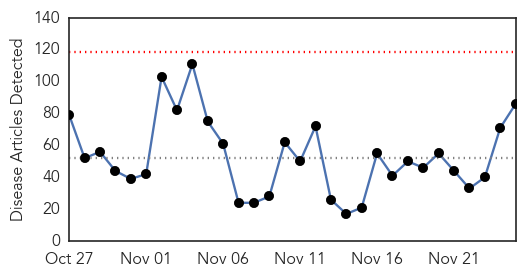

30 Day Trends
Web: 0 alerts, 0 warnings
Twitter: 0 alerts, 0 warnings
Top Articles:
- 0.996
- South Korea’s last confirmed MERS patient dies
- 0.991
- Last MERS patient dies
- 0.991
- Last South Korean MERS patient dies
- 0.990
- Last South Korean MERS patient dies
- 0.959
- E. Coli Outbreak Linked to Costco Chicken Salad, C.D.C Says
- 0.953
- Costco chicken salad behind E. coli outbreak in 7 states
- 0.953
- Final MERS patient dies 8 weeks after his discharge-INSIDE Korea JoongAng Daily
- 0.952
- ‘Kissing Bugs’ That May Carry Deadly Parasite Found in the South
- 0.948
- KBS World Radio
- 0.927
- What Is Norovirus? FAQ About The Common Cruise Ship Illness
- 0.918
- Agency: E. coli outbreak linked to Costco sickens 19 people in 7 US states
- 0.913
- Costco Wholesale : 5 E. coli cases linked to Costco
- 0.907
- Free flu shot clinic set for Tuesday
- 0.905
- E. coli linked to Costco chicken salad
- 0.905
- E. Coli Linked to Costco Rotisserie Chicken Salad — 7 States With Reported Cases
- 0.887
- No, Kissing Bugs Are Not a New Scourge
- 0.886
- "Good" Mozzie Virus Might Hold Key to Fighting Human Disease
- 0.876
- Missouri Hotel Closed after Legionnaires' Bacteria Found
- 0.866
- Greek private sector union calls Dec. 3 strike over pension reform
- 0.859
- 16 affected by multistate E. coli outbreak linked to Costco chicken salad
- 0.856
- Your Health: Passing on a flu shot could mean weeks of misery this winter
- 0.853
- Coli at Amherst Chipotle Linked to Cases in Different States
- 0.844
- CDC warns Floridians about potential 'kissing bug'
- 0.836
- Sweden finds coriander to be source of shigellosis
- 0.829
- Kissing Bugs CDC: Insect Spotted in Georgia, however No Cases of Chagas There. News Source
- 0.807
- 19 people ill from E. coli linked to Costco chicken salad
- 0.806
- Deadly ‘Kissing Bug’ Spotted In Georgia, Southern States
- 0.806
- E. coli outbreak linked to Turlock Chipotle restaurant
- 0.796
- Costco chicken salad pulled over concerns it makes people sick
- 0.790
- 19 people in 7 states ill in E. coli outbreak tied to Costco
- 0.789
- 5 Tricky Health Conditions That Are Frequently Misdiagnosed
- 0.773
- HIV part 2. :: Dr. Mitch's Blog Blog/DrMitchShow
- 0.758
- 'Kissing bug' an insect lover's parasite
- 0.756
- Costco Chicken Salad Sickens 19 With E Coli
- 0.754
- INTERVIEW-Chronic malnutrition to rise in Yemen on lack of water, poor sanitation
- 0.754
- France detects first bird flu outbreak in eight years
- 0.750
- CFHI and Omni Med Battle Preventable Diseases in Uganda
- 0.743
- Chicken Salad From Costco Linked To E. Coli Outbreak In Seven States
- 0.740
- FDA tests point toward E. coli in salad vegetables
- 0.739
- Costco E. coli outbreak expected to grow, includes California
- 0.737
- How Deadly Are 'Kissing Bugs'?
- 0.734
- CDC Officials Warn About 'Kissing Bugs' in Georgia
- 0.731
- 6 Montana residents sickened by E coli, possibly from eating Costco chicken salad
- 0.730
- Costco: FDA tests point toward E. coli in salad vegetables - MyNorthwest
- 0.730
- Costco: FDA tests point toward E. coli in salad vegetables - MyNorthwest
- 0.725
- Teen who lost leg to bacteria doing well
- 0.724
- Strong blow to Costco’s image: Rotisserie Chicken Salad linked to at least 19 E.coli infection cases
- 0.714
- Costco Chicken Salad Linked To E. Coli Cases In Seven States
- 0.712
- How to avoid colds and flu when you fly
- 0.708
- A Vaccine For Malaria? Some Scientists Are Closer Than Ever Following Groundbreaking Clinical Trials
Showing top 50 articles...
Top Tweets:
- 0.688
- RT: Forte présence policière en amont de la manif de l'opposition. Des officiers en cagoule viennent de checker ma carte de p…
Web/News Articles
Tweets